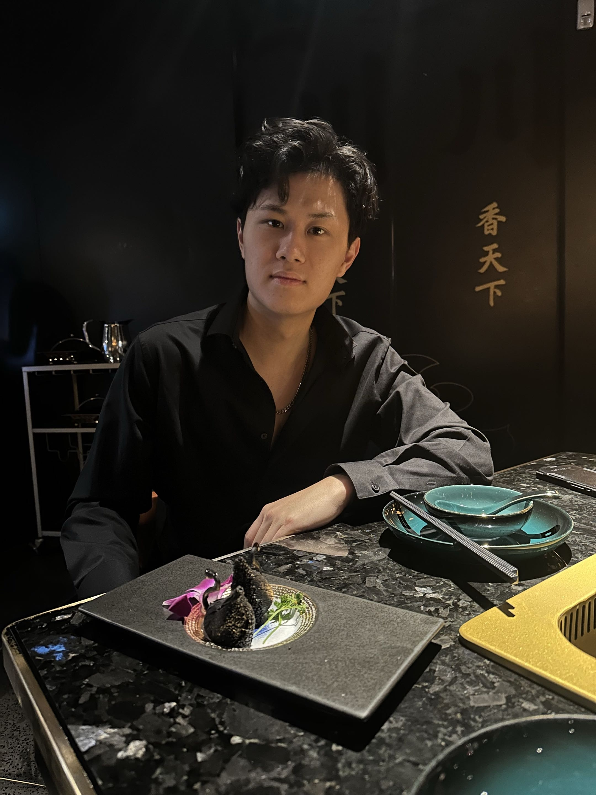

JASON LEE
I graduated from UC Berkeley with a dual major in Computer Science and Art Practice, alongside the EECS Honors Program, a selective track designed to push engineers beyond the bounds of their own discipline and into broader intellectual territory.
While most of my peers stayed within a single discipline, I was among the few actively bridging CS and art, an intersection that remains largely underexplored, and the space that became my calling.
My vision is to bridge the worlds of art and technology. I believe we are on the edge of a new realm of entertainment, one built not just on LLMs, but on deeper, less explored fields like deep computer vision and reinforcement learning. The future of creative experience lies in systems that can perceive, adapt, and respond, not just generate.
Outside of work, I'm drawn to exploring cuisine and fine dining, hunting down collectibles, golf, and bouldering.